Question
Documents gives the page a specific angle instead of repeating the navigation label.
FAQ / 01
FAQ opens as a clear government decision hub: what Forum offers, who it helps, why it matters, and which route to take first.
The first screen combines positioning, proof, primary action, and fast internal navigation, so people can act immediately or compare the rest of the faq route with context.
Plain service hero
Select the closest route and Forum keeps the next step, proof, and follow-up expectation aligned with public service access.
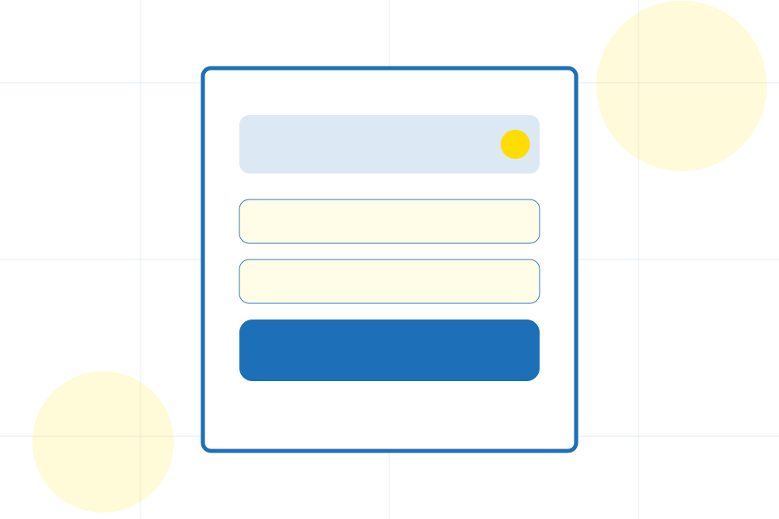
FAQ / 02
Access handles buying doubts directly so visitors can understand timing, fit, limits, and the safest next step.
Answers are short by design: enough to remove hesitation, not so much that the page turns into documentation before the visitor can act.
Explore FAQAccess gives the page a specific angle instead of repeating the navigation label.
The square service boxes show what to compare, what to avoid, and what matters most for government, public sector & civic services visitors.
The final cue points to a useful internal route so the section keeps the journey moving.
FAQ / 03
Documents handles buying doubts directly so visitors can understand timing, fit, limits, and the safest next step.
Answers are short by design: enough to remove hesitation, not so much that the page turns into documentation before the visitor can act.
Explore FAQ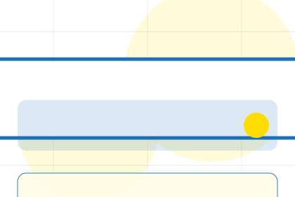
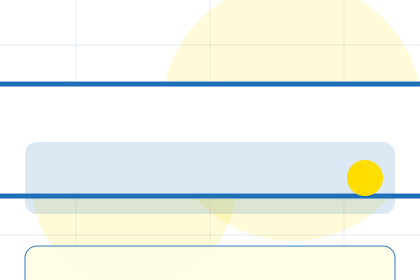
Documents gives the page a specific angle instead of repeating the navigation label.
FAQ / 04
Rules handles buying doubts directly so visitors can understand timing, fit, limits, and the safest next step.
Answers are short by design: enough to remove hesitation, not so much that the page turns into documentation before the visitor can act.
Explore FAQRules gives the page a specific angle instead of repeating the navigation label.
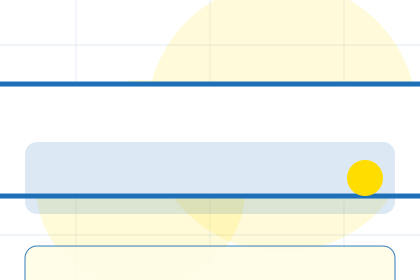
The square service boxes show what to compare, what to avoid, and what matters most for government, public sector & civic services visitors.
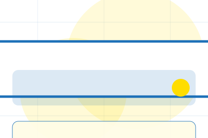
The final cue points to a useful internal route so the section keeps the journey moving.
FAQ / 05
Payments makes commercial comparison easier by showing fit, scope, and terms before government visitors ask for the next step.
The layout keeps price-sensitive decisions honest: it separates starting scope, fuller delivery, and ongoing support so the visitor can ask a sharper question.
Explore FAQWho the offer is for, which scope it suits, and when a different route may be better.
What is included clearly enough for government, public sector & civic services visitors to compare value without hidden jargon.
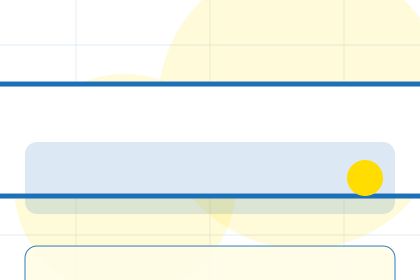
The practical details that should be confirmed before someone asks to start a request.
FAQ / 06
Applications handles buying doubts directly so visitors can understand timing, fit, limits, and the safest next step.
Answers are short by design: enough to remove hesitation, not so much that the page turns into documentation before the visitor can act.
Explore FAQApplications gives the page a specific angle instead of repeating the navigation label.
The square service boxes show what to compare, what to avoid, and what matters most for government, public sector & civic services visitors.
The final cue points to a useful internal route so the section keeps the journey moving.
FAQ / 07
Offices handles buying doubts directly so visitors can understand timing, fit, limits, and the safest next step.
Answers are short by design: enough to remove hesitation, not so much that the page turns into documentation before the visitor can act.
Explore FAQOffices gives the page a specific angle instead of repeating the navigation label.
The square service boxes show what to compare, what to avoid, and what matters most for government, public sector & civic services visitors.
The final cue points to a useful internal route so the section keeps the journey moving.
FAQ / 08
Complaints handles buying doubts directly so visitors can understand timing, fit, limits, and the safest next step.
Answers are short by design: enough to remove hesitation, not so much that the page turns into documentation before the visitor can act.
Explore FAQ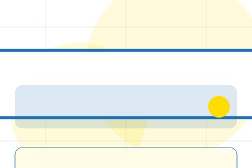
Complaints gives the page a specific angle instead of repeating the navigation label.
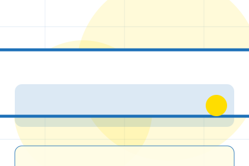
The square service boxes show what to compare, what to avoid, and what matters most for government, public sector & civic services visitors.
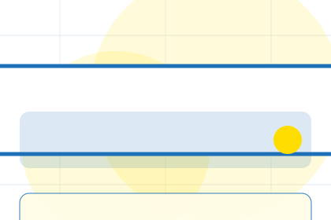
The final cue points to a useful internal route so the section keeps the journey moving.
FAQ / 09
Help handles buying doubts directly so visitors can understand timing, fit, limits, and the safest next step.
Answers are short by design: enough to remove hesitation, not so much that the page turns into documentation before the visitor can act.
Open ContactHelp gives the page a specific angle instead of repeating the navigation label.
The square service boxes show what to compare, what to avoid, and what matters most for government, public sector & civic services visitors.
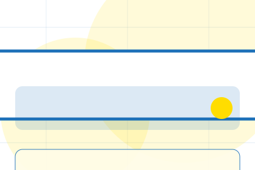
The final cue points to a useful internal route so the section keeps the journey moving.
FAQ / 10
Forum closes the faq route with a clear action, a quick reminder of the value, and a low-friction way to start a request.
Visitors who are ready can use the primary action. Visitors who are still comparing can scan the section links, proof, and support routes before they start a request.
Start RequestThe final block keeps the choice simple: act now, compare one more proof route, or send enough detail for a focused response.
Start Requestpublic service access
A civic service site with task-first pages, blue start buttons, form patterns, and accessibility-first structure. FAQ ends with a direct path to start a request, plus enough context for visitors who still need to compare.
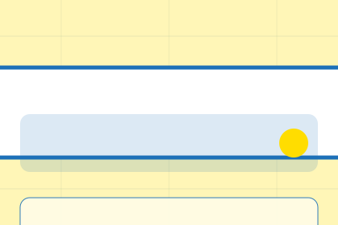
Start RequestPublic service content must be verified by the responsible authority before publication.